Google Cloud Practice Project
Lab: Building a DevOps Pipeline ↓
- 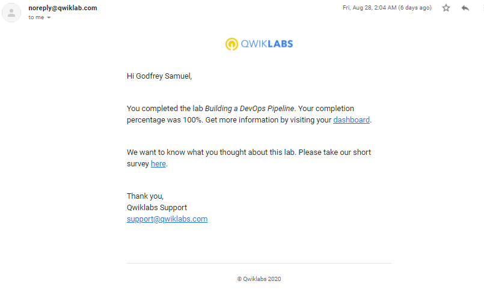
Lab: Caching Cloud Storage content with Cloud CDN ↓
- 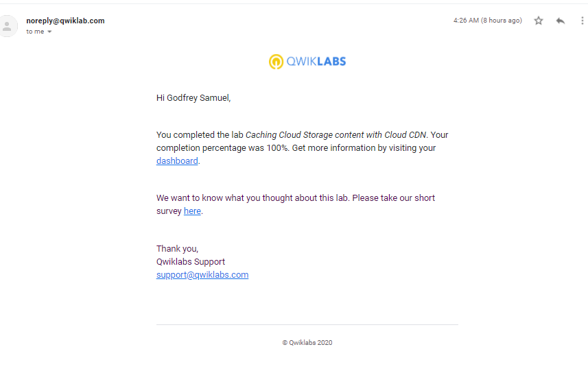
Lab: Classify Images with Pre-built ML Models using Cloud Vision API and AutoML ↓
- 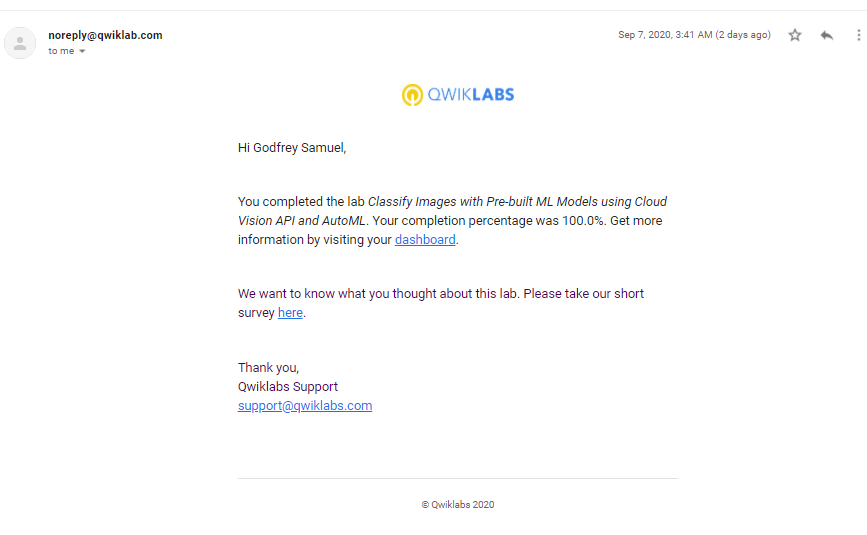
Lab: Configuring an HTTP Load Balancer with Cloud Armor ↓
- 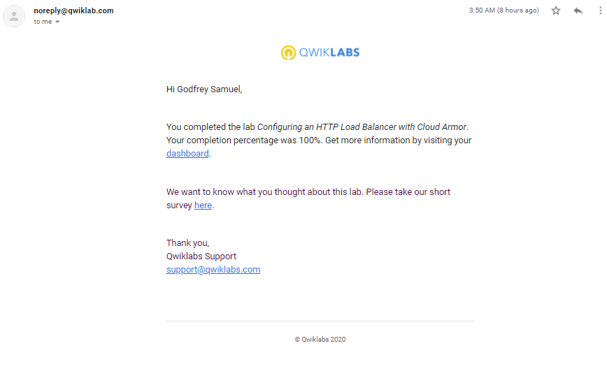
Lab: Configuring an Internal Load Balancer ↓
- 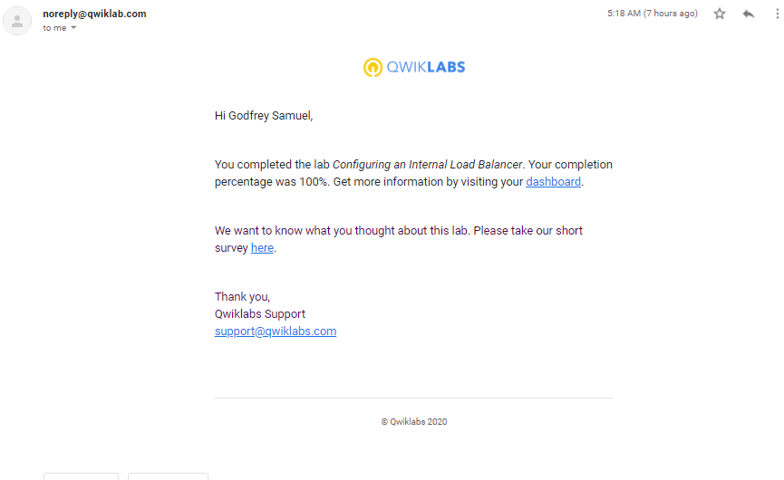
Lab: Configuring VPC Network Peering ↓
- 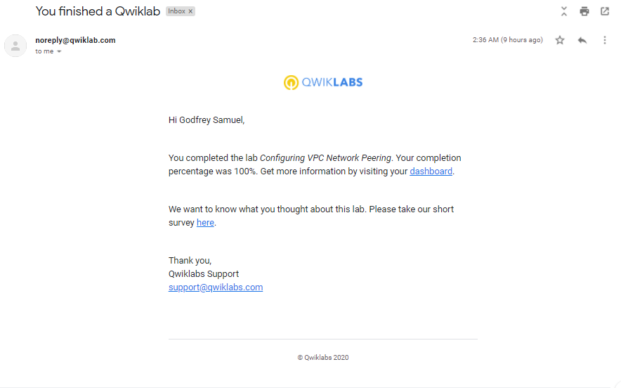
Lab: Create a Streaming Data Pipeline for a Real-Time Dashboard with Cloud Dataflow ↓
- 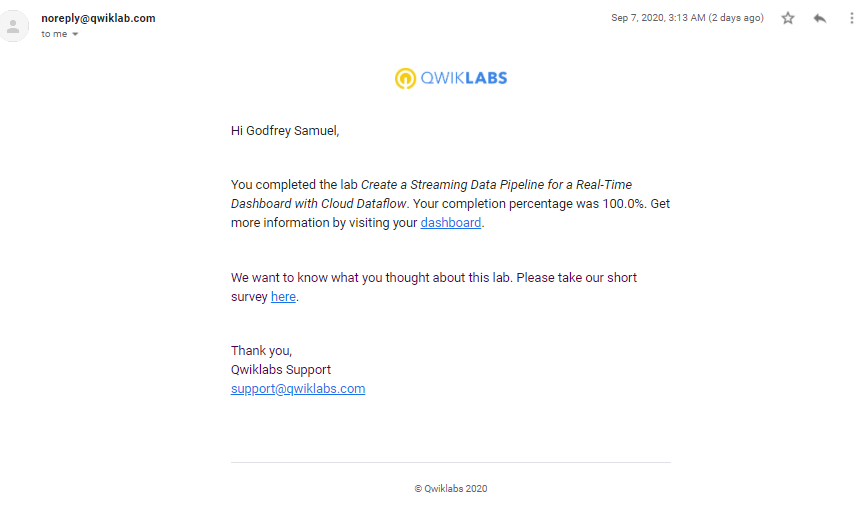
Lab: Deploying apps to google cloud ↓
- 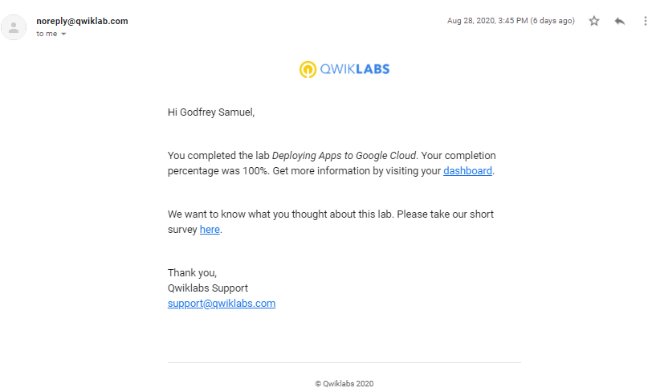
Lab: Explore a BigQuery Public Dataset ↓
- 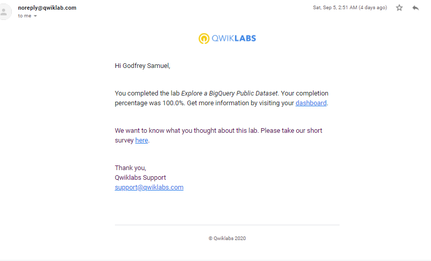
Lab: Getting Started with VPC Networking ↓
- 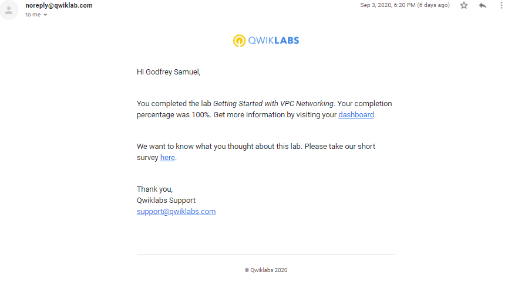
Lab: Google Cloud Fundamentals Getting started with cloud marketplace ↓

Lab: Google Cloud Fundamentals Getting started with cloud Storage and cloud SQL ↓
- 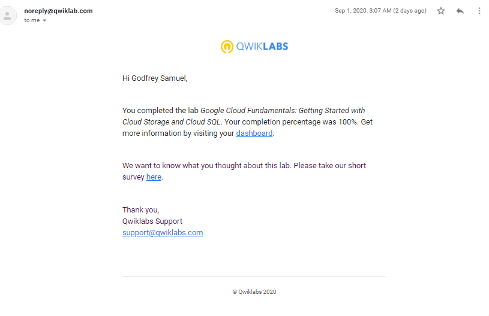
Lab: Google Cloud Fundamentals Getting started with compute Engine ↓
- 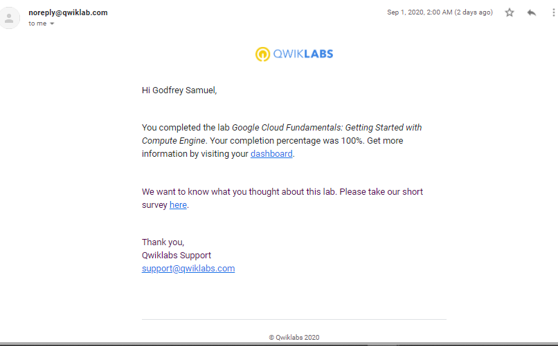
Lab: Monitoring application in google cloud ↓
- 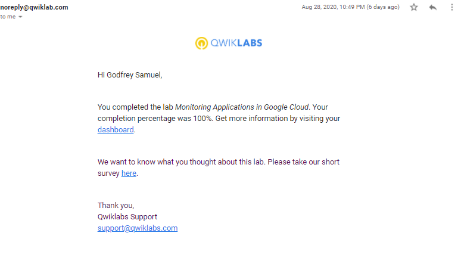
Lab: Google Cloud Fundamentals Getting Started with GKE ↓
- 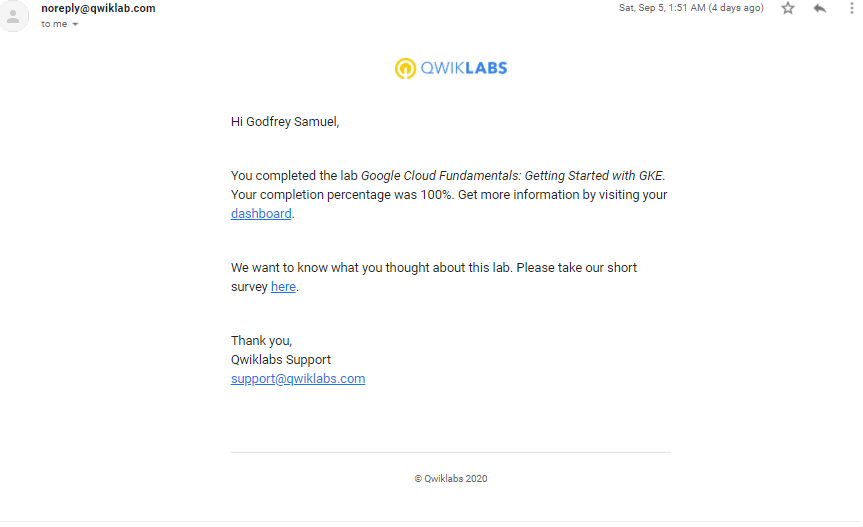
Lab: Predict Visitors Purchases with a Classification Model with BigQuery ML ↓
- 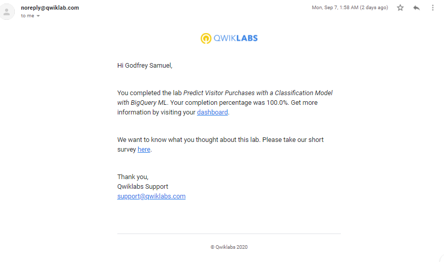
Lab: Recommend Products using ML with Cloud SQL and Dataproc ↓
- 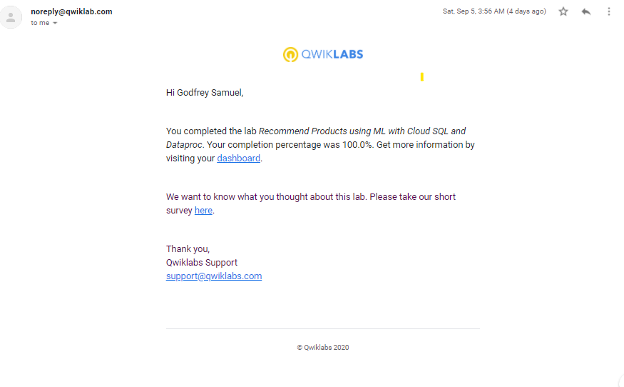
Lab: Working with multiple VPC networks ↓
- 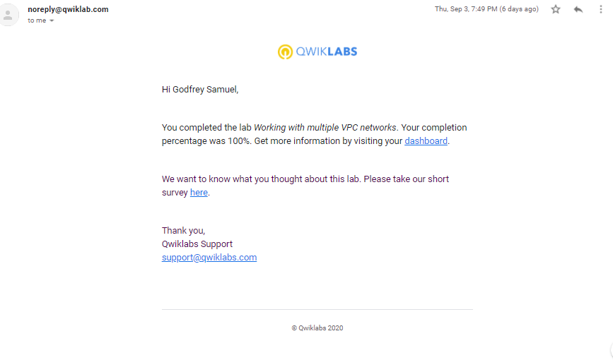
Google Cloud Fundamentals:
Getting Started with Google Kubernetes Engine
To create a Google Kubernetes Engine Cluster containing several containers, each containing a webserver and place a Load Balancer in front of the cluster and view its contents
Export my zone:
Start a Kubernetes cluster managed by Kubernetes Engine. The cluster is named Webfrontend and configure it to run 2 nodes:
Check installed Kubernetes version:
Run and deploy a container
Launch a single instance of the nginx container(a popular webserver):
View pod running the nginx container:
Expose the nginx container to the internet:
View the new Service:
Scale up the number of pods running on the service:
Confirm that Kubernetes has updated the number of pods:
App Dev: Deploying the Application into Kubernetes Engine
Nodejs
Set the project in Google Cloud Shell:
list the project ID:
Clone source code from git repository in cloud shell:
Create a soft link as a shortcut to the working directory:
Change working directory:
Configure the Quiz apllication:
This script file:
- Creates a Google App Engine application.
- Exports environment variables GCLOUD_PROJECT and GCLOUD_BUCKET.
- Runs npm install.
- Creates entities in Google Cloud Datastore.
- Creates a Google Cloud Pub/Sub topic.
- Creates a Cloud Spanner Instance, Database, and Table.
- Prints out the Google Cloud Platform Project ID.
Create a Kubernetes Engine Cluster:
Connect to the Cluster:
List the pods in the Cluster:
After creating the Dockerfile for the Frontend and Backend;
Build the frontend Docker image-
Build the backend Docker image-
Create a Kubernetes Deployment file
Provision the quiz frontend Deployment:
Provision the quiz backend Deployment:
Provision the quiz frontend Service: